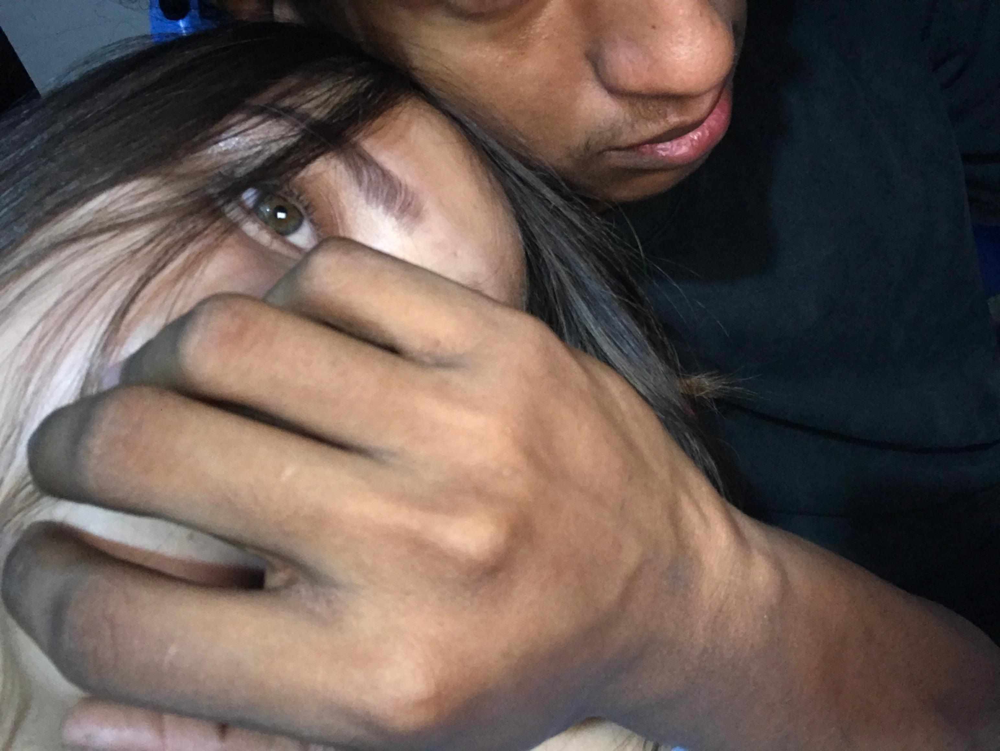

Antes de abrirla hay algo que quiero preguntarte...
¿Cómo me dices de cariño? 🍮

Desde que llegaste a mi vida, cambiaste por completo una rutina que antes sentía tan gris. Mis días ya no pesan igual y, aunque los problemas siguen existiendo, dejaron de sentirse imposibles.
Hay algo curioso que me pasa contigo. A veces estoy teniendo un día terrible, cansado, con ganas de rendirme… y de repente llega un mensaje tuyo.
A veces es una foto tuya, otras veces una foto de Odette, y sin darte cuenta vuelves a cambiar mi ánimo.
En esos momentos siento que recupero fuerzas para seguir adelante. Trabajo con más ganas, sonrío sin darme cuenta y recuerdo una frase de Gaara que siempre me marcó:
“El que no tenga un propósito para vivir es como si estuviera muerto.”
Y creo que tú te convertiste en uno de los motivos que me recuerdan por qué vale la pena seguir esforzándome cada día.
Me enamoré de cosas que quizá ni siquiera sabes que tienes. De tu sonrisa, de tus ojos, de tu manera de ser, de tu forma de pensar, de tu personalidad, de tus virtudes e incluso de esas pequeñas imperfecciones que tú tal vez quisieras cambiar.
Aprendí a querer cada parte de ti, tanto las que muestras con orgullo como aquellas que escondes porque crees que no son suficientes.
Porque para mí, todas ellas forman a la mujer de la que, poco a poco, me fui enamorando.
Gracias por existir.
Gracias por aparecer cuando menos lo esperaba.
Y gracias por hacer que, incluso en mis peores días, encuentre un motivo para levantarme una vez más.